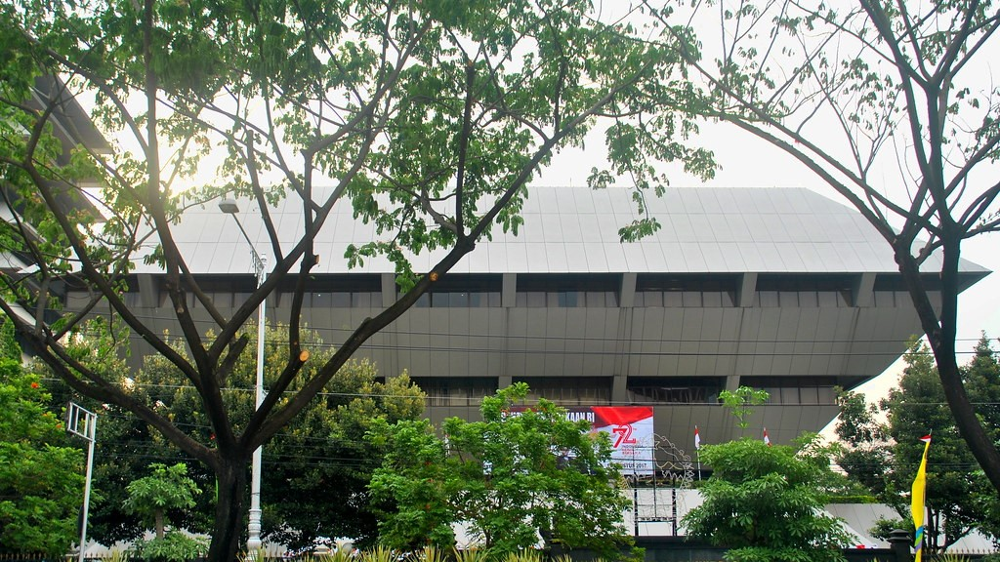

JAWA TENGAH
Jawa Tengah (disingkat Jateng, bahasa Jawa: ꦗꦮꦶꦩꦢꦾ, Pegon: جاوي مـديا, translit. Jawi Madya) adalah
sebuah provinsi di Indonesia yang terletak di bagian tengah Pulau Jawa. Ibu kotanya adalah Kota
Semarang. Provinsi ini berbatasan dengan Provinsi Jawa Barat di sebelah barat, Samudra Hindia dan
Daerah Istimewa Yogyakarta di sebelah selatan, Jawa Timur di sebelah timur, dan Laut Jawa di sebelah
utara. Luas wilayahnya 32.800,69 km², atau sekitar 28,94% dari luas pulau Jawa. Provinsi Jawa Tengah
juga meliputi Pulau Nusakambangan di sebelah selatan (dekat dengan perbatasan Jawa Barat), serta
Kepulauan Karimun Jawa di Laut Jawa. Penduduk Jawa Tengah berdasarkan Badan Pusat Statistik tahun
2021 berjumlah 36.516.035 jiwa dengan kepadatan 1.113,00 jiwa/km².
Pengertian Jawa Tengah secara geografis dan budaya kadang juga mencakup wilayah Daerah Istimewa
Yogyakarta. Jawa Tengah bagian tengah dikenal sebagai pusat budaya Jawa. Meskipun demikian di
provinsi ini ada pula suku bangsa lain yang memiliki budaya yang berbeda dengan suku Jawa seperti
suku Sunda di daerah perbatasan dengan Jawa Barat, sebagian masyarakat Kabupaten Brebes dan
Kabupaten Cilacap. Selain itu ada pula warga Tionghoa-Indonesia, Arab-Indonesia dan India-Indonesia
sebagai pendatang yang tersebar di seluruh provinsi ini. Sejak tahun 2008, provinsi Jawa Tengah
memiliki hubungan kembar dengan provinsi Fujian di Tiongkok.
Visi dan Misi
VISI
“MENUJU JAWA TENGAH SEJAHTERA DAN BERDIKARI”
TETEP MBOTEN KORUPSI, MBOTEN NGAPUSI
MISI
Misi 1 : Membangun masyarakat jawa tengah yang religius, toleran dan guyup untuk menjaga Negara
Kesatuan Republik Indonesia;
Misi 2 : Mempercepat reformasi birokrasi serta memperluas sasaran ke Pemerintah Kabupaten/Kota;
Misi 3 : Memperkuat kapasitas ekonomi rakyat dan memperluas lapangan kerja untuk mengurangi
kemiskinan dan pengangguran; dan
Misi 4 : Menjadikan masyarakat Jawa Tengah, lebih sehat, lebih pintar, lebih berbudaya, dan
mencintai lingkungan;
Sejarah
Jawa Tengah sebagai provinsi dibentuk sejak zaman Hindia Belanda. Hingga tahun 1905, Jawa Tengah
terdiri atas 5 wilayah (gewesten), yakni Semarang, Pati, Kedu, Banyumas, dan Pekalongan. Surakarta
masih merupakan daerah swapraja kerajaan (vorstenland) yang berdiri sendiri dan terdiri dari dua
wilayah, Kasunanan Surakarta dan Mangkunegaran, sebagaimana Yogyakarta. Masing-masing gewest terdiri
atas kabupaten-kabupaten. Waktu itu Pati Gewest juga meliputi Regentschap Tuban dan Bojonegoro.
Setelah diberlakukannya Decentralisatie Besluit tahun 1905, gewesten diberi otonomi dan dibentuk
dewan daerah. Selain itu juga dibentuk gemeente (kotapraja) yang otonom, yaitu Pekalongan, Tegal,
Semarang, Salatiga, dan Magelang.
Sejak tahun 1930, provinsi ditetapkan sebagai daerah otonom yang juga memiliki Dewan Provinsi
(Provinciale Raad). Provinsi terdiri atas beberapa karesidenan (residentie), yang meliputi beberapa
kabupaten (regentschap), dan dibagi lagi dalam beberapa kawedanan (district). Provinsi Jawa Tengah
terdiri atas 5 karesidenan, yaitu Pekalongan, Pati, Semarang, Banyumas, dan Kedu.
Menyusul kemerdekaan Indonesia, pada tahun 1945 Pemerintah membentuk daerah swapraja Kasunanan dan
Mangkunegaran; dan dijadikan karesidenan. Pada tahun 1950 melalui undang-undang ditetapkan
pembentukan kabupaten dan kota madya di Jawa Tengah yang meliputi 29 kabupaten dan 6 kota madya.
Penetapan undang-undang tersebut hingga kini diperingati sebagai Hari Jadi Provinsi Jawa Tengah,
yakni tanggal 15 Agustus 1950.
Pemerintahan

Secara administratif, Provinsi Jawa Tengah terdiri atas 29 kabupaten dan 6 kota. Administrasi
pemerintahan kabupaten dan kota ini terdiri atas 545 kecamatan dan 8.490 desa/kelurahan.
Sebelum tahun 2001, Pemerintahan Daerah Jawa Tengah juga terdiri atas 3 kota administratif, yaitu
Kota Purwokerto, Kota Cilacap, dan Kota Klaten. Namun sejak diberlakukannya otonomi daerah,
kota-kota administratif tersebut dihapus dan menjadi bagian dalam wilayah kabupaten.
Menyusul otonomi daerah, 3 kabupaten memindahkan pusat pemerintahan ke wilayahnya sendiri, yaitu
Kabupaten Magelang (dari Kota Magelang ke Mungkid), Kabupaten Tegal (dari Kota Tegal ke Slawi),
serta Kabupaten Pekalongan (dari Kota Pekalongan ke Kajen).